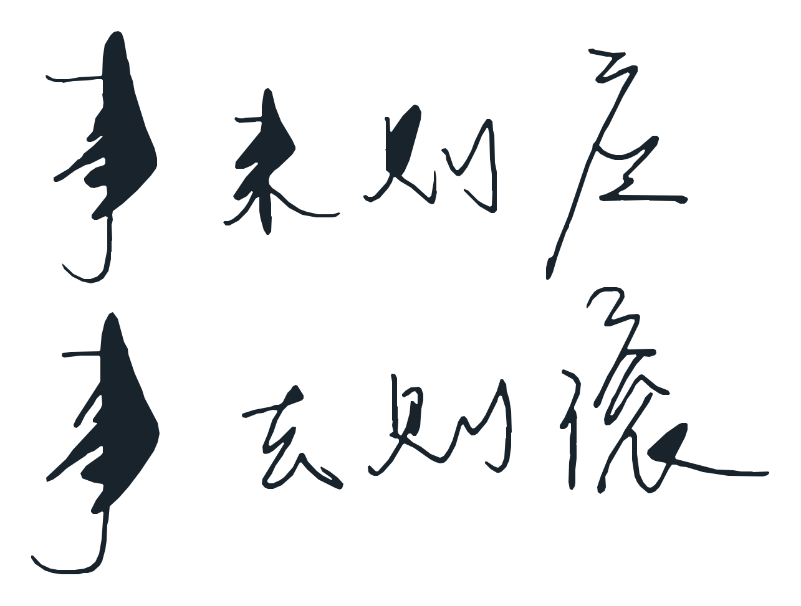

Elsewhere
Things that do not belong on an academic CV.
Music, objects, places, stray observations, minor enthusiasms, and other professionally unnecessary material.
Listening
On repeat
G.O.A.T
Still my G.O.A.T.
First Snow
Fourteen years and counting.
Atmos
Some things are just in the air.
Places
Worth remembering
Cities, rooms, meals, walks, and other coordinates that linger.
Objects
Unnecessary attachment
Things with enough design intensity to become a minor intellectual problem.
Small obsessions
Currently unresolved
Temporary, recurring, and sometimes completely unreasonable.
Field notes
A public notebook for small thoughts.
Short observations, things I liked, things I noticed, and whatever else survived the day. Replies are welcome.
A small doctrine
